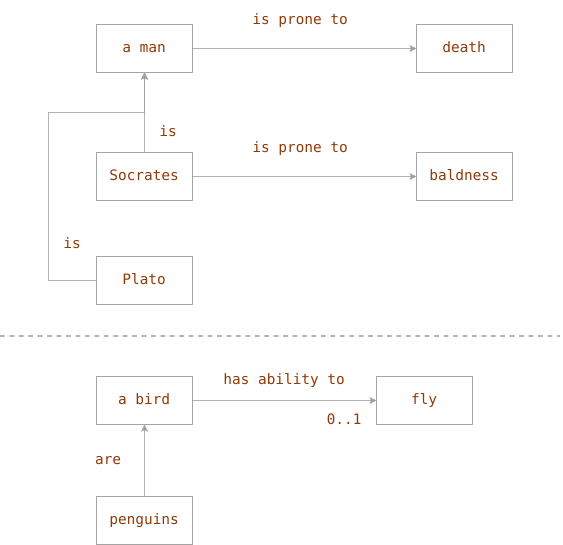

Simple Diagrams For Logic
Applications of my simple diagrams
In the previous post about my simple diagrams I demonstrated how they are easy and intuitive and how they cover the same functionality as semantic nets, some of UML diagrams, FlowChart, Grafcet and many others - they are just route maps! Here it is one funny example of them - in the area of logic.
In logic there are 2 famous ways of inference: deduction and induction.
Deduction is a "moving" (simple diagrams are like maps, so I use this verb) from the general to the particular. Famous example:
1. *All* humans are mortal. 2. Socrates is a human. 3. Therefore, Socrates is mortal.
Induction is a "moving" from the particular to the general, common conclusion, example:
1. My American friend has a name. 2. All Americans have names.
Sometimes, we can hear that deduction and especially induction don't work. Let's try to look at it little bit deeper. Deduction and induction can be seen as a direction of moving of simple diagrams "map", or on some semantic net.
We have a type/class and its objects/instances linked by the relation "is a". Like, "Tom is a cat". And a type can have its, type's attributes/properties, ie, attributes having values common for all instances of that type. As well as objects can have their own individual values for some properties (usual case). It's about quantification formed by expressions like "for all/everyone/each", "it exists/some of them/sometimes". And if you pay attention to this, you see the cause of the "failure" of "deduction" and "induction" schemes - they work always when quantifications are correct/consistent. They corresponds to "routes" on simple diagrams:

Syllogism 1 is correct: we really easy pass the route: Socrates -is-> a man -is-prone-to-> death
Example, of attempt to build invalid induction (we move from the particular - Socrates - to the general - men) syllogism:
1. Socrates is bald. 2. Socrates is a man. 3. People are bald.
We see, for example, for Plato that we cannot pass from Plato to baldness! :) We just don't have such a fact about him.
Every rule/law has scope of application/domain/conditions where it is true and out of them - it becomes possibly false. Quantification. "For… what?" - we see from the diagram that from Socrates we really can come to "baldness". But the route "Socrates -> a man -> baldness" is impossible. We could draw it more generally (like in the bottom part of the diagram - about birds) like "a man -can-be-> [0..1] bald".
Another example of "invalid syllogism", now deduction's form:
1. All birds can fly. 2. Penguins are birds. 3. Therefore, penguins can fly.
Deduction is OK, but it is not appliable because the proposition is not fully correct
(quantification is not "for all/for all instances/for all subtypes"): we can pass from
penguins to "a bird" and then we stay in the front of the fact: "has ability to fly [0..1]",
i.e., some of them. The key fact on the diagram is the arity of the relation "has ability to":
it is 0..1.
It's very primitive example of simple diagrams but in the complex examples they could help to control logical reasoning too: they are very close to semantic nets.
And also it is very easy to use them as decision trees.